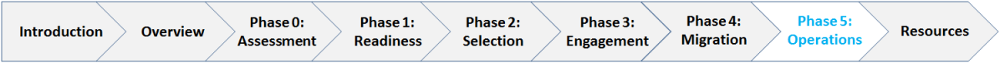

<CENTER>
  
  <BR>
  <table class="m3-table" style="border-style: hidden; border: 0px solid #FFFFFF;">
    {% include m3.nav.image.map.html %}
    <tbody>
      <tr style="border-style: hidden; ">
        <td style="border-style: hidden; font-family: calibri;font-size: 36px;color: #00a2e8"><span class="PhaseTitle">Phase 5: Operations</span></td>
        <!--<td style="border-style: hidden; vertical-align: middle" align="right"></p>
<map id="ImageMapsCom-image-maps-2016-07-22-020822" name="image-maps-2016-07-22-020822">
<area title="Image Map" alt="Image Map" coords="404,55,406,57" shape="rect" href="http://www.image-maps.com/index.php?aff=mapped_users_0" />-->
        <area title="Phase 0: Assessment" alt="Phase 0: Assessment" coords="13,17,50,17,55,29,47,40,20,40" shape="poly" href="https://www.ussm.gov/m3phase0" target="_self" />
        <area title="Phase 1: Readiness" alt="Phase 1: Readiness" coords="57,13,122,17,127,29,113,39,62,40" shape="poly" href="https://www.ussm.gov/m3phase1" target="_self" />
        <area title="Phase 2: Customer Readiness" alt="Phase 2: Customer Readiness" coords="126,16,187,14,191,30,185,36,132,40" shape="poly" href="https://www.ussm.gov/m3phase2" target="_self" />
        <area title="Phase 3: Engagement" alt="Phase 3: Engagement" coords="193,16,256,16,258,27,248,38,196,37" shape="poly" href="https://www.ussm.gov/m3phase3" target="_self" />
        <area title="Phase 4: Migration" alt="Phase 4: Migration" coords="265,16,320,16,323,29,317,40,263,41" shape="poly" href="https://www.ussm.gov/m3phase4" target="_self" />
        <area title="Phase 5: Operations" alt="Phase 5: Operations" coords="329,17,387,19,389,29,378,42,328,40" shape="poly" href="https://www.ussm.gov/m3phase5" target="_self" /> </map>
        </td>
      </tr>
    </tbody>
  </table>
  <p>
    <!-- Phase 5 OBJECTIVES -->
  </p>
  <table width="75%" style="border: 1px solid #c7e9f5;margin-left: 2.5%;margin-right: 2.5%" border="1">
    <tbody>
      <tr>
        <td style="background-color: #c7e9f5" nowrap="nowrap"><b>Objective:</b></td>
        <td> <span class="DefinitionText"><b>Deliver services and conduct continuous process improvement.</b></span></td>
      </tr>
    </tbody>
  </table>
  <p>
    <!-- TABLE Phase 5 READINESS WORKSTREAMS -->
  </p>
  <table class="aTable" style="border: 1px solid 000000;width: 75%">
    <tbody>
      <tr>
        <!-- ******************************** DOWNLOADS ******** -->
        </p>
        <td colspan="5"> <span class="M3Text"> <strong><a href="https://ussm.gov/assets/files/2018_M3 Playbook_Final_Phase 5.pdf" class="ext-link" rel="external nofollow" onclick="this.target=&#039;_blank&#039;;">Phase 5 Playbook</a></strong> •  <strong><a href="https://ussm.gov/assets/files/Phase5PlaybookGuidance_10.05.18FINAL.pdf" class="ext-link" rel="external nofollow" onclick="this.target=&#039;_blank&#039;;">Phase 5 Guidance</a></strong></span></td>
      </tr>
      <tr>
        <td style="vertical-align: top; height:300px; width: 80px;" rowspan="2" ></td>
        <td style="vertical-align: top;background-color: #3c8a2e; width:230px;" height="60"></td>
        <td style="vertical-align: top;background-color: #00b0f0; width:230px;" height="60"></td>
        <td style="vertical-align: top;background-color: #92d050; width:230px;" height="60"></td>
        <td style="vertical-align: top;background-color: #002060; width:230px;" height="60"></td>
      </tr>
      <p>
        <!-- ************************************ACTIVITIES: PROGRAM MANAGEMENT***************************************************-->
      </p>
      <tr>
        <td style="vertical-align: top;border: 1px solid #aaa; width:270px;"><a href="../5.1"><span class="ActivityShared" style="font-size:14px;">5.1 Review Performance against Expected Benefits<br />
</span></a><a href="../5.2"><span class="ActivityShared" style="font-size:14px;">5.2 Collect Lessons Learned</span></a><br />
          <a href="../5.3"><span class="ActivityShared" style="font-size:14px;">5.3 Implement O&M Governance</span></a></td>
        <p>
          <!-- ************************************ACTIVITIES: WORKFORCE *************************************** -&gt;-->
        </p>
        <td style="vertical-align: top;border: 1px solid #aaa; width: 270px;"><a title="5.4 Support Stabilization and Perform Change Management" href="../5.4"><span class="ActivityShared" style="font-size:14px;">5.4 Support Stabilization and Perform Change Management</span></a></td>
        <p>
          <!-- ************************************ACTIVITIES: TECHNOLOGY *************************************** -&gt;-->
        </p>
        <td style="vertical-align: top;border: 1px solid #aaa; width:270px;"><a href="../5.5"><span class="ActivityProvider" style="color: #008080; font-size:14px;">5.5 Maintain Applications Post Go-Live</span><br />
</a><a href="../5.6"><span class="ActivityCustomer" style="font-size:14px;">5.6 Decommission Legacy Systems</span></a></td>
        <p>
          <!-- ************************************ACTIVITIES: PROCESS AND SERVICE DELIVERY *************************************** -&gt;-->
        </p>
        <td style="vertical-align: top;border: 1px solid #aaa; width:270px;"><a href="../5.7"><span class="ActivityShared" style="font-size:14px;">5.7 Conduct Continuous Process Improvement</span></a><br />
          <a href="../5.8"><span class="ActivityShared" style="font-size:14px;">5.8 Manage Contact Center</span></a><br />
          <a href="../5.9"><span class="ActivityShared" style="font-size:14px;">5.9 Monitor and Update SLAs</span></a></td>
      </tr>
    </tbody>
  </table>
  <p>&nbsp;</p>
  <!-- AddThis Sharing Buttons below -->
  </div>
  <!-- .entry-content -->
  </article>
  <!-- #post-## -->
  <div class="fw-container">
  </div>
